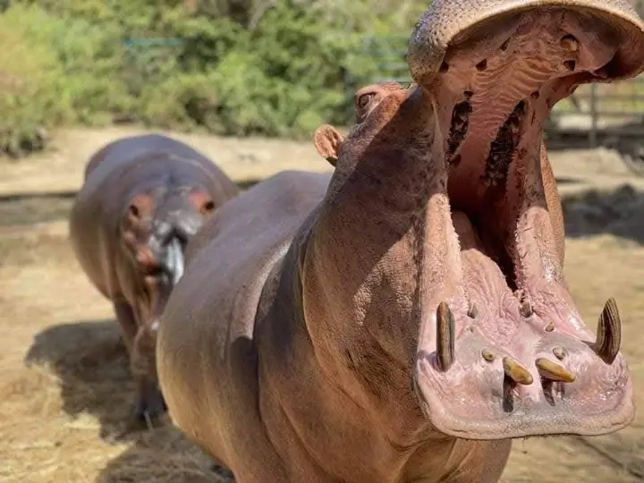

Le parc animalier de Ziniare
Situé à 30 Km à l’Est de Ouagadougou, le parc animalier de Ziniaré est plein d'attractions fascinantes qui attirent les voyageurs aventureux. Il abrite des animaux en semi-libertés et entoure la résidence du Président Compaoré et celle de son frère François. Ce parc constituait à son ouverture dans les années 90 un réel motif de fierté pour le Burkina Faso et la ville de Ziniaré, chef-lieu de la région du Plateau central. Vous y trouverez des zèbres, gazelles, lions, phacochères, oiseaux, des autruches, éléphants, buffles, et les fameu hippopotames. Le parc est bien vaste et il faudra prévoir une voiture si vous voulez tout visiter sans vous fatiguer. Il dispose de guides qui connaissent bien le parc et les animaux.
le parc animalier : un lieu à visiter absolument !